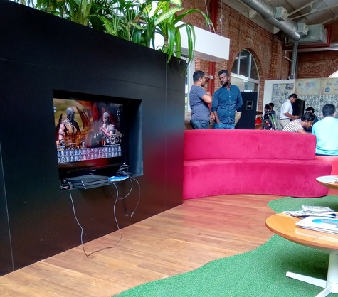

Hello, I just thought to write about my first working experience in industry. I had the opportunity to work at CodeGen International (pvt) Ltd for my 6 month internship period. Of course that was a great time and a nice experience there to understand how industry working and get exposure. I worked in Research and Development team and involved in few projects in web crawling and used technologies java, spring boot, mysql etc. Through the internship I got knowledge and experience on latest trends of software engineering and got a nice working experience with a great set of people.
How I got SelectedIt was basically through interview and a small technical test. The CVs of interested students have been sent to the company through department. Then they shortlisted a set of candidates and asked to come to their office for an test. I was also among them and We had a small written test which contained java questions as well as MYSQL design problems. So after that we were interviewed separately. After few days, I was informed about my internship opportunity.
Induction SessionAfter starting the internship period, I had to follow the induction training session. We were given presentations on introduction to company, introduction to technologies in company and session by HR department in this period. Also we were given and training assignment to finish with a deadline. The assignment was a development of a simple Hotel Booking System using Angular, Spring Boot, REST API, and MySQL. Also in this induction period what I felt most important was the technical training sessions for the interns. They were basically focused on the technologies important for the training assignment as well as whole internship program. The technologies like Angular, Spring Boot, Docker, Linux, UI/UX were covered through these sessions. It was a great help for the internship. As the company followed Agile development practise, we had scrum meetings each day, I got the first experience of a scrum meeting through that. Also the training assignment was a great help to identify how to work in industrial environment and to get ready with that mindset for the rest of internship program. After the end of induction period, there was a review and we were assigned to actual projects within R&D.
Projects DidAfter the induction period, I was assigned to a team that does web crawling. I was assigned to design and implement few new web crawlers. A web crawler is a program or automated script which browses the World Wide Web in a methodical, automated manner and extract the required data from them. I used java as the language and Jsoup library for the development. I myself successfully implemented 4 web crawlers to be used in the team. They basically crawl, event data all over the world, school holidays, hotel booking package data, reviews of Hotels, Attractions and Restaurants. Also there was a project for me to extract few defined features like Board basis, Room Type, View from a large set of booking descriptions crawled so far. It was a part of data preprocessing. There was an internal API to extract keywords from such statements. I wrote a program to work as client for that API and extract features and save in files. At the end of the projects, there was a code review as well as a final feedback session. I got a very good feedback at the end.
CodeGen Toastmaster's ClubAll the trainees including me had few interactive sessions from Toastmasters club of CodeGen. They were ice breaker speech that I had to talk about me in front of an audience. A table topic session where I had to talk on an given topic at that time, A presentation where I have to do an presentation on something. Inspire Audience speech where I have to inspire the audience with an inspiring talk. Those sessions were good and very interesting. Also these helped me a lot to improve my speech ability, and learn the correct techniques of speech and presenting through the reviews of my speeches by toastmasters club.
CodeGen Sports FiestaCodeGen Sports Fiesta was an enthusiastic event that happened in my training duration. All the employees were grouped in to four teams names Trojans, vikings, Spartans and Titans. It was as grand event with many sport activities.

So the internship at CodeGen was a nice working experience with a great set of people.